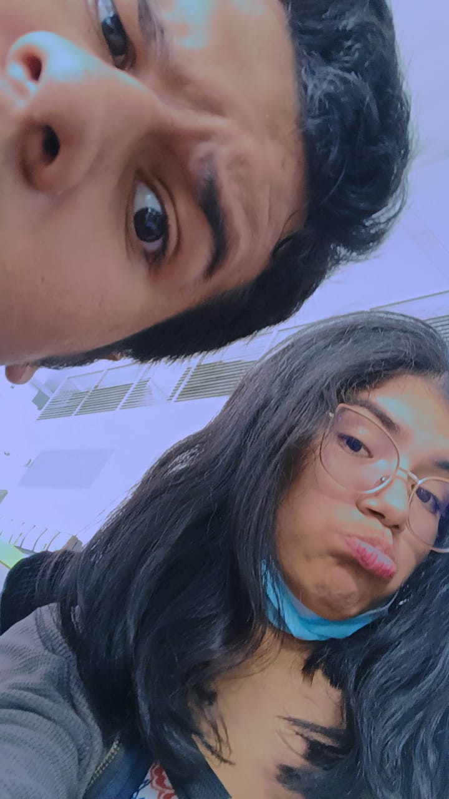
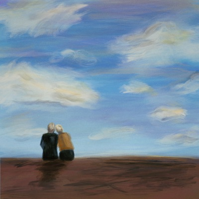
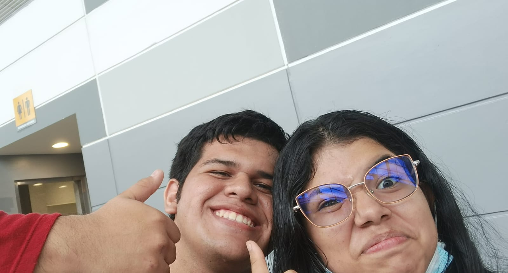

Mi princesa, han pasado cinco años
y aún sigo embobado en tu encanto,
tu mirada es la luz de mis mañanas
y tu voz el consuelo de mi llanto.
Eres la mujer perfecta en mi vida,
en mis memorias, sin duda alguna
siento que eres la mujer que deseo
me acompañe hasta el fin de mis días.
Tu sonrisa es la flor de mi jardín,
tu cabello el aroma de mi almohada,
tu piel el terciopelo de mi tacto
y tu beso el elixir de mi vida.
No hay nadie que me llene como tú,
ni que me haga sentir tan dichoso,
eres la musa de mis versos
y la reina de mi corazón.
Mi princesa, te quiero con el alma,
con el cuerpo, con el pensamiento,
eres la razón de mi existencia
y el sueño de mi sentimiento.
Mi princesa, te pido que me quieras
como yo te quiero a ti,
que seas siempre mi compañera
y que nunca te alejes de mí.